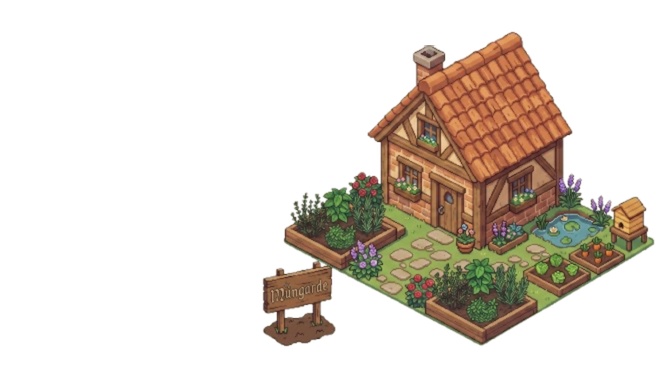
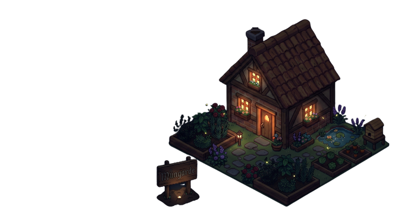

내 정원 My Garden
🐝
The Garden map (Stardew-style 2D map with TOPIK zones and your grammar plants growing) ships in a later plan. Meanwhile, head to Practice to start cultivating.
The Garden map (Stardew-style 2D map with TOPIK zones and your grammar plants growing) ships in a later plan. Meanwhile, head to Practice to start cultivating.

